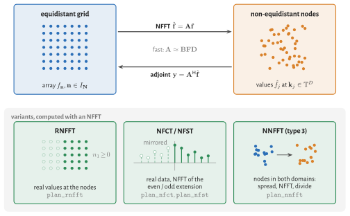
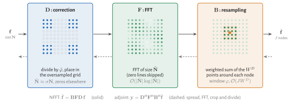

Mathematical Background
This page defines the transforms that NFFT.jl computes and the three stages of the algorithm. The derivation and the error analysis are in the NFFT.jl paper, whose notation we follow.

The NFFT maps an array on an equidistant grid to values at non-equidistant nodes, its adjoint maps back. The other transforms are built on it: the RNFFT restricts it to real values at the nodes, the NFCT and NFST apply it to the even or odd extension of real data, and the NNFFT wraps it into a spreading and a division to reach non-equidistant points on both sides (see Other transforms).
The NFFT is also called NUFFT, and in MRI gridding. FINUFFT and others classify the transforms into types: type 2 is the NFFT, type 1 its adjoint, type 3 the NNFFT with non-equidistant points on both sides.
NDFT
Let $\bm{N} \in \mathbb{N}^D$ be the size of a $D$-dimensional array $\bm{f} = (f_{\bm{n}})_{\bm{n} \in I_{\bm{N}}}$ sampled on a grid, indexed by the centred multi-index set
\[I_{\bm{N}} := \mathbb{Z}^D \cap \prod_{d=1}^D \left[-\frac{N_d}{2},\frac{N_d}{2}\right).\]
The non-equidistant discrete Fourier transform (NDFT) evaluates the trigonometric polynomial with coefficients $f_{\bm{n}}$ at $J$ nodes $\bm{k}_j \in \mathbb{T}^D$, where $\mathbb{T} := [-1/2, 1/2)$ is the torus:
\[\hat{f}_j := \sum_{\bm{n} \in I_{\bm{N}}} f_{\bm{n}} \, \mathrm{e}^{-2\pi\mathrm{i}\,\bm{n}\cdot\bm{k}_j}, \quad j = 1,\dots,J \qquad \textit{(equidistant to non-equidistant)}.\]
Its adjoint maps values at the nodes back to the grid,
\[y_{\bm{n}} = \sum_{j=1}^{J} \hat{f}_j \, \mathrm{e}^{2\pi\mathrm{i}\,\bm{n}\cdot\bm{k}_j}, \quad \bm{n} \in I_{\bm{N}} \qquad \textit{(non-equidistant to equidistant)}.\]
In general the adjoint is not the inverse; see Density Compensation and Toeplitz Kernels.
The indices in $I_{\bm{N}}$ are centred around zero, while an ordinary DFT runs over $0,\dots,N_d-1$. An fftshift converts one representation into the other.
Matrix notation
With $|\bm{N}| := \prod_{d=1}^D N_d$ the NDFT is the matrix–vector product $\hat{\bm{f}} = \bm{A} \bm{f}$ with
\[\bm{A} := \left( \mathrm{e}^{-2\pi\mathrm{i}\,\bm{n}\cdot\bm{k}_j} \right)_{j=1,\dots,J;\; \bm{n} \in I_{\bm{N}}} \in \mathbb{C}^{J \times |\bm{N}|},\]
and the adjoint is $\bm{y} = \bm{A}^{\mathsf{H}} \hat{\bm{f}}$. A plan in NFFT.jl behaves like this matrix: p * f, adjoint(p) * fHat, size(p) == (J, prod(N)).
NFFT
The direct evaluation costs $\mathcal{O}(J |\bm{N}|)$ operations. The NFFT approximates $\bm{A}$ by a product of three matrices,
\[\bm{A} \approx \bm{B} \bm{F} \bm{D},\]
which costs $\mathcal{O}(|\tilde{\bm{N}}| \log |\tilde{\bm{N}}| + J W^D)$. Here $\tilde{\bm{N}} \approx \sigma \bm{N}$ is the size of an oversampled grid with oversampling factor $\sigma > 1$, and $W$ is the width of the window function in grid points. Each matrix is one stage of the algorithm:
- Resampling correction $\bm{D} \in \mathbb{C}^{|\tilde{\bm{N}}| \times |\bm{N}|}$: divides $\bm{f}$ by the Fourier transform $\hat{\varphi}$ of the window function and places the result in the zero-padded oversampled array (including the
fftshift). - FFT $\bm{F} \in \mathbb{C}^{|\tilde{\bm{N}}| \times |\tilde{\bm{N}}|}$ on the oversampled grid.
- Resampling $\bm{B} \in \mathbb{C}^{J \times |\tilde{\bm{N}}|}$: a sparse matrix that interpolates the oversampled grid at each node with the window function $\varphi$, i.e. it combines the $W^D$ grid points around the node.

The adjoint NFFT applies the adjoint stages in reverse order,
\[\bm{A}^{\mathsf{H}} \approx \bm{D}^{\mathsf{H}} \bm{F}^{\mathsf{H}} \bm{B}^{\mathsf{H}}.\]
The first of them, $\bm{B}^{\mathsf{H}}$, adds the weighted value of each node to the grid points around it; this is the costly and hard-to-parallelise part of the adjoint.
The matrix $\bm{B}$ is often called convolution and $\bm{D}$ deconvolution. Since $\bm{B}$ evaluates the window at node-dependent offsets, it is not shift-invariant and therefore not a convolution. We use the terms resampling and resampling correction, as in the paper.
Window, width and oversampling
The accuracy of the approximation depends on three choices: the window function $\varphi$, its width $W$ and the oversampling factor $\sigma$. A larger $W$ or $\sigma$ reduces the error, at a higher cost in the resampling ($W^D$ per node) or in the FFT ($\sigma^D$). In the notation of the paper the window has the half width $m$, so $W = 2m$; NFFT.jl also allows odd widths.
NFFT.jl chooses all three from the requested relative error, see Accuracy and Parameters.
Other transforms
Real values at the nodes (RNFFT). If the values at the nodes are real, the coefficients are Hermitian, $f_{-\bm{n}} = \overline{f_{\bm{n}}}$, and the half $\bm{h}$ with $n_1 = 0, \dots, \lfloor N_1/2 \rfloor$ determines them. The RNFFT is the counterpart of FFTW's brfft/rfft:
\[\hat{f}_j = \operatorname{Re} \sum_{\bm{n}} h_{\bm{n}} \, \mathrm{e}^{-2\pi\mathrm{i}\,\bm{n}\cdot\bm{k}_j}, \qquad h_{\bm{n}} = \sum_{j=1}^J y_j \, \mathrm{e}^{2\pi\mathrm{i}\,\bm{n}\cdot\bm{k}_j} \quad \text{(adjoint)},\]
adjoint to each other with respect to the real inner product. It computes on a real oversampled grid, which saves about half of the FFT and of the adjoint resampling; see Real Data.
Cosine and sine transforms (NFCT, NFST). The non-equidistant fast cosine and sine transforms of NFFT3 use real data and nodes in $[0, 1/2]^D$:
\[\hat{f}_j = \sum_{\bm{n}} f_{\bm{n}} \prod_{d=1}^D \cos(2\pi n_d k_{d,j}), \qquad \hat{f}_j = \sum_{\bm{n}} f_{\bm{n}} \prod_{d=1}^D \sin(2\pi n_d k_{d,j}),\]
with $n_d = 0,\dots,N_d-1$ (cosine) and $n_d = 1,\dots,N_d$ (sine) for an array of size $\bm{N}$. Their transposes take the role of the adjoint. NFFT.jl computes them as NFFTs of the even and odd extension of the data, see Cosine and Sine Transforms.
Non-equidistant on both sides (NNFFT). For arbitrary real sources $\bm{y}_l$ and targets $\bm{k}_j$,
\[\hat{f}_j = \sum_{l} f_l \, \mathrm{e}^{-2\pi\mathrm{i}\,\bm{k}_j\cdot\bm{y}_l}.\]
The sources are spread with a window onto an equidistant grid, an NFFT evaluates that grid at the scaled targets, and a division by the Fourier transform of the window undoes the spreading; see Non-equidistant in Both Domains.